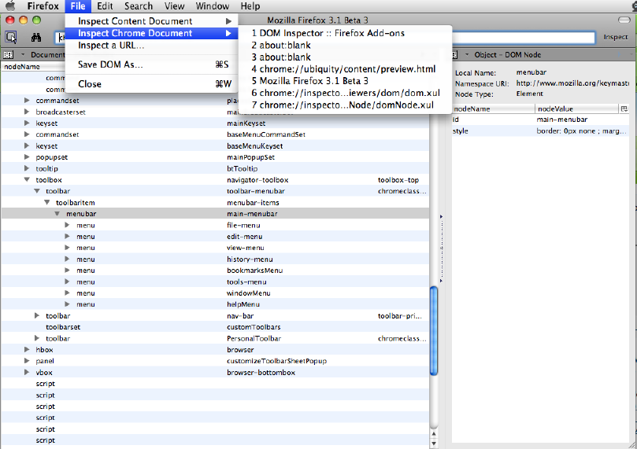

Design Challenge Tutorial: Stupid XPI Tricks
- We'll go through four extension examples in this tutorial:
- Use a throwaway profile for this tutorial.
- Reminder: To make a throwaway profile, first make a directory like so:
- Mac: mkdir -p ~/Profiles/stupid-tricks
- Windows: md "%USERPROFILE%\Projects\stupid-tricks"
- Linux: mkdir -p ~/Profiles/stupid-tricks
- Then go to the command line and launch a separate Firefox instance, running the new profile, like so:
- Mac: /Applications/Firefox.app/Contents/MacOS/firefox -profile ~/Profiles/stupid-tricks -no-remote
- Windows: "C:\Program Files\Mozilla Firefox\firefox.exe" -profile "%USERPROFILE%\Profiles\stupid-tricks" -no-remote
- Linux: /usr/bin/firefox -profile ~/Profiles/stupid-tricks -no-remote
- The install instructions on the rest of the pages assume that you put the stupid-tricks folder in your home directory, and that you created a throwaway profile at Profiles/stupid-tricks inside your home directory.
- We'll be using DOM inspector. Download here (for Firefox 3).

- Tools menu -> DOM inspector
- File menu -> Inspect chrome document -> choose main firefox window (usually the first item)
- Click the button that looks like a mouse pointer clicking a button
- Switch back to the main Firefox window and click on the item of interest.